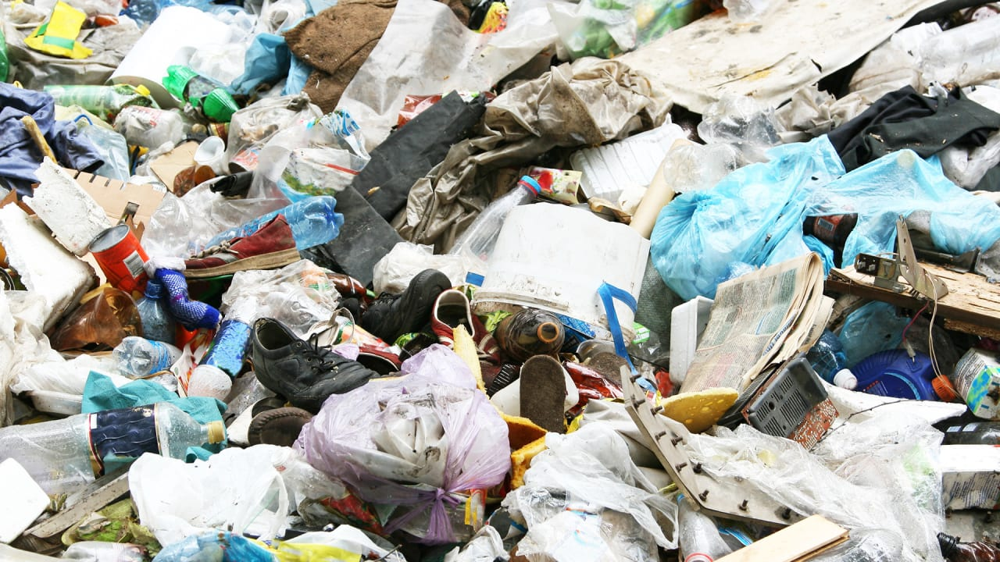
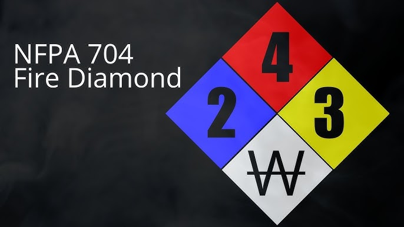

Home
Website ini hadir sebagai panduan edukasi dan alat bantu untuk memahami pengelolaan Limbah Bahan Berbahaya dan Beracun (B3) sesuai dengan standar limbah di Indonesia. Di website kami, teman-teman dapat mempelajari konsep dasar limbah B3, melihat data statistik terkini, dan menggunakan alat analisis untuk mengevaluasi tingkat bahaya limbah tertentu. Di website ini, kami juga mencantumkan peta letak perusahaan yang mengelola limbah B3 di Indonesia. Kami berkomitmen memberikan informasi yang jelas, mudah diakses, dan bermanfaat untuk mendukung pengelolaan limbah yang aman dan ramah lingkungan.
Kami juga menyediakan website terpisah untuk mengidentifikasi limbah B3 serta penanganannya yang benar.
Identifikasi Label Wadah Kemasan B3Apa Itu Limbah?
Pernahkah kamu memperhatikan banyaknya sampah yang menumpuk di sekitar kita? Sampah rumah tangga, sisa makanan, botol plastik, dan berbagai jenis sampah lainnya semakin hari semakin bertambah. Jika dibiarkan begitu saja, sampah-sampah ini akan mencemari lingkungan kita, seperti sungai, laut, dan tanah. Akibatnya, hewan-hewan bisa sakit dan habitatnya rusak. Bahkan, sampah juga bisa menyebabkan banjir dan bau tidak sedap.
Limbah sendiri adalah sisa atau buangan yang dihasilkan dari berbagai proses produksi, baik yang berasal dari kegiatan industri maupun domestik. Secara umum, limbah dapat didefinisikan sebagai bahan yang sudah tidak memiliki nilai guna, tidak digunakan lagi, dan dibuang oleh manusia. Menurut Kamus Besar Bahasa Indonesia (KBBI), limbah juga disebut sebagai barang yang rusak atau cacat dalam proses produksi. Limbah dapat berupa berbagai bentuk, termasuk limbah padat seperti kertas dan kardus, serta limbah organik yang berasal dari sisa makanan atau tumbuhan4.
Kenapa limbah itu penting? Karena kalau tidak dikelola dengan benar, limbah bisa bikin lingkungan kita jadi kotor dan sakit. Misalnya, sampah plastik yang dibuang sembarangan bisa nyangkut di saluran air, bikin banjir. Atau, limbah pabrik yang beracun bisa mencemari sungai dan laut, bikin ikan-ikan pada mati.
Standarisasi Limbah di Indonesia
Di Indonesia, standar pengelolaan limbah diatur melalui berbagai peraturan perundang-undangan, seperti Undang-Undang, Peraturan Pemerintah (PP), dan Peraturan Menteri Lingkungan Hidup dan Kehutanan (PermenLHK). Berikut beberapa poin utama standar limbah di Indonesia:
- Jenis Limbah
- Limbah B3 (Bahan Berbahaya dan Beracun) merupakan limbah yang mengandung bahan berbahaya yang dapat merusak lingkungan atau kesehatan manusia.
- Limbah Non-B3 merupakan limbah yang tidak memiliki sifat berbahaya, seperti limbah domestik dan limbah organik
- Regulasi
- PP No. 22 Tahun 2021: Tentang Penyelenggaraan Perlindungan dan Pengelolaan Lingkungan Hidup. Mengatur standar baku mutu lingkungan, termasuk air, udara, tanah, dan limbah
- Permen LHK No. P.5/Menlhk/Setjen/Kum.1/2021: Tentang Pengelolaan Limbah B3. Mengatur prosedur pengelolaan limbah B3 mulai dari penyimpanan, pengangkutan, hingga pemusnahan.
- Permen LHK No. 68 Tahun 2016: Tentang Baku Mutu Air Limbah Domestik. Menentukan parameter baku mutu air limbah dari aktivitas domestik seperti rumah tangga, hotel, atau restoran.
- Baku Mutu Limbah
- Baku mutu limbah adalah batas maksimum kandungan zat pencemar yang diperbolehkan untuk dilepas ke lingkungan.
- Pengelolaan Limbah
- Pengurangan Limbah: Usaha untuk meminimalkan limbah yang dihasilkan.
- Pengolahan Limbah: Limbah diolah agar aman sebelum dilepas ke lingkungan.
- Pemanfaatan Kembali: Limbah digunakan kembali untuk proses tertentu (misalnya daur ulang).
- Pemusnahan: Limbah yang tidak bisa diolah dimusnahkan dengan metode seperti insinerasi atau penimbunan aman (landfill).
- Sanksi Pelanggaran
- Pelanggaran terhadap standar limbah dapat dikenakan sanksi administratif, pidana, atau denda sesuai dengan Undang-Undang No. 32 Tahun 2009 tentang Perlindungan dan Pengelolaan Lingkungan Hidup.
Statistik Limbah B3 di Indonesia
Pada tahun-tahun terakhir, terdapat peningkatan dalam jumlah limbah B3 di Indonesia. Beberapa kasus yang terjadi menunjukkan betapa pentingnya pengelolaan limbah yang aman dan tepat.
Statistik Limbah B3
- Jumlah Limbah B3 di Indonesia (2020-2023): 6.600.000 ton
Pengelolaan limbah B3 di Indonesia menunjukkan perkembangan positif dengan peningkatan jumlah yang dikelola setiap tahun. Namun, tantangan dalam pemisahan dan pengelolaan yang tepat masih perlu diatasi untuk mengurangi dampak negatif terhadap lingkungan dan kesehatan masyarakat.
Pengelolaan limbah yang baik adalah kunci untuk menjaga lingkungan dan kesehatan masyarakat. Dengan mengelola limbah secara benar, kita dapat mengurangi dampak negatif limbah terhadap lingkungan, meminimalisir risiko penyakit, serta memanfaatkan kembali sumber daya yang masih dapat digunakan. Pengelolaan limbah yang komprehensif mencakup pengurangan, pemilahan, pengolahan, dan pemanfaatan kembali limbah.
Tabel Data Limbah B3 yang Dikelola
Data Ditjen PSLB3
| No. | Sub Sektor | 2015 Unit | 2015 Ton | 2016 Unit | 2016 Ton | 2017 Unit | 2017 Ton | 2018 Unit | 2018 Ton | 2019 Unit | 2019 Ton | 2020 Unit | 2020 Ton | 2021 Unit | 2021 Ton |
|---|---|---|---|---|---|---|---|---|---|---|---|---|---|---|---|
| 1 | Pertambangan, Energi, dan Migas (PEM) | 34 | 90.417.311,57 | 55 | 65.164.117,47 | 53 | 55.060.917,97 | 69 | 32.326.110,00 | 70 | 39.722.274,00 | 30 | 33,49 | 57 | 27.363.135,22 |
| 2 | Prasarana dan Jasa | 108 | 31.365.793,62 | 86 | 1.173.234,78 | 64 | 1.213.303,50 | 89 | 3.640.330,00 | 120 | 1.391.572,00 | 41 | 6,90 | 74 | 365.997,55 |
| 3 | Manufaktur | 91 | 1.827.535,30 | 68 | 5.515.539,26 | 75 | 392.772,52 | 140 | 4.971.036,00 | 150 | 1.001.519,00 | 41 | 9,03 | 55 | 2.867.570,69 |
| 4 | Agro Industri | 36 | 2.165.722,84 | 77 | 1.685.258,38 | 70 | 3.638.803,42 | 101 | 12.731.915,00 | 110 | 2.758.369,00 | 38 | 113,29 | 59 | 10.502.671,49 |
Dataset ini menunjukkan statistik limbah B3 berdasarkan sub-sektor industri di Indonesia. Sub-sektor Pertambangan, Energi, dan Migas (PEM) menjadi kontributor terbesar dengan total limbah mencapai 90,4 juta ton dari 34 unit, sedangkan Manufaktur menghasilkan limbah terkecil, yaitu 1,8 juta ton dari 91 unit. Prasarana dan Jasa, meskipun memiliki unit terbanyak (108 unit), menghasilkan limbah relatif lebih rendah, yaitu 31,3 juta ton.
Data juga menunjukkan variasi volume limbah di berbagai kategori atau periode tambahan, dengan beberapa kategori mencatat volume besar (seperti Ton.1 untuk PEM sebesar 65,1 juta ton) dan kategori lain dengan angka sangat kecil. Hal ini mengindikasikan adanya ketimpangan dalam pengelolaan dan pelaporan limbah. Sub-sektor seperti PEM membutuhkan perhatian khusus untuk meningkatkan efisiensi pengelolaan limbah, sementara sektor kecil seperti Manufaktur memiliki peluang untuk mencapai nol limbah dengan strategi yang tepat.
NFPA 704
Analisis Limbah B3
Berikut adalah form analisis limbah B3 berdasarkan kode dari data Peraturan Pemerintah Republik Indonesia No. 101 Tahun 2014 Tentang Pengelolaan Limbah Bahan Berbahaya dan Beracun.
Silahkan Isi Survei Berikut📝
Sebelum mengisi survei di bawah, kalian bisa membaca sedikit mengenai NFPA di website berikut: NFPA
klik aku